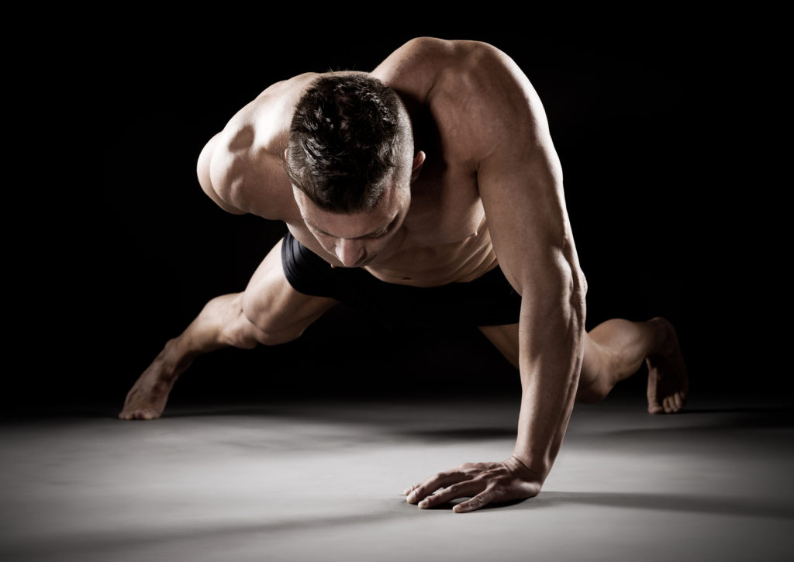
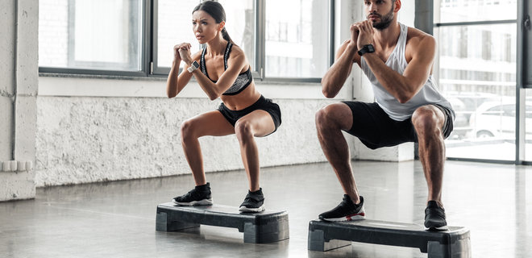
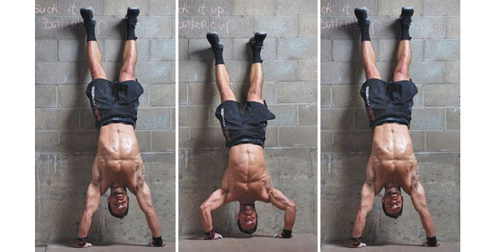

Віджимання. Броньовані груди та сталеві трицепси
Віджимання – головна вправа для верхньої частини тіла. Воно допомагає розвинути силу і витривалість, наростити м'язи, зміцнити суглоби, і, крім тренування м'язів верхньої частини тіла, допомагає налагодити їхню погоджену роботу з м'язами середньої та нижньої. частин тіла. Жодна вправа не може зрівнятися з віджиманнями щодо ефективності та користі.
Ідеальна техніка = ідеальний результат
- Уникайте неприродних положень тіла та надмірно жорстких позицій. Знайдіть те положення, в якому вам зручно виконувати віджимання.
- Тримайте торс, стегна та ноги рівно. Неприродний прогин у попереку і зад, що стирчить вгору - ознака слабкого поперекового відділу.
- Тримайте ноги разом. Ви виконувати вправу з широко розставленими ногами значно легше, оскільки відпадає необхідність стабілізувати торс під час руху.
- Руки повинні бути прямими у найвищій точці вправи, але не розпрямляйте лікті до кінця – тримайте їх «м'якими» – трохи зігнутими. Це допомагає знизити навантаження на суглоби.
- Дихання має бути рівним. Запам'ятайте тепер одне неписане правило: видихаємо на підйомі та вдихаємо, коли опускаємося вниз. Якщо ж ви помітили, що дихання збивається або вам не вистачає повітря, просто зробіть додатковий подих.
Швидкість
Багато хто рекомендує виконувати віджимання на високій швидкості - і навіть максимально високій швидкості. Деякі також ратують за пліометричні віджимання - старі добрі віджимання з бавовною, в яких верхня частина тіла енергійно виштовхується якомога вище, щоб встигнути ляснути в долоні один, два або навіть три рази.
Швидкі віджимання мають низку своїх переваг. Швидкі рухи стимулюють нервову систему завдяки «рефлексу розтягування м'язів». Якщо у вас сильний дух змагання, тренуйтеся на час. Крім того, швидкі рухи м'язами гарні власними силами. Однак є одна умова для виконання таких віджимань — рівень підготовки повинен бути вищим за початковий. Але незалежно від вашої фізичної форми, збільшуйте швидкість виконання віджимань поступово, дозволяючи тілу адаптуватися до навантаження.
Пара серій швидких віджимань, що чергуються зі звичайними віджиманнями за швидкістю, не тільки урізноманітнить тренування, а й підвищить вашу витривалість. І все ж таки я рекомендую виконувати віджимання відносно повільно. Дві секунди- рух вниз, одна секунда - пауза, дві секунди - рух вгору, а потім відразу вниз без паузи.
Ви повинні культивувати такий рівномірний ритм. На те є дві причини.
Перша у тому, що рівномірна техніка дозволяє досягти високого рівня розвитку природної сили. При виконанні вибухових вправ у якийсь момент руху ви неминуче почнете покладатися на інерцію. Але якщо всю роботу виконує інерція, це означає, що ваші м'язи не працюють. Більше того, на швидких віджиманнях набагато простіше шахраювати подібним чином і тим самим полегшити собі виконання цих вправ. Ви напевно бачили, як деякі спортсмени буквально кидають своє тіло під час руху вниз — відбувається це саме тому, що вони не мають м'язів і сил для утримання тіла в горизонтальному положенні.
Друга причина полягає у влаштуванні людських суглобів. Вони легше адаптуються до навантажень у регулярних та рівномірних рухах, ніж у вибухових. Найменше ризик травмувати суглоби. Швидкі рухи досить безпечно виконувати лише після того, як суглоби адаптуються та зміцняться за допомогою регулярного виконання рівномірних рухів. Вибухові вправи корисні як доповнення до тренування, але не як його основа. Ті, хто тренується виключно на виконанні швидких віджимань, провокують різні хвороби суглобів, які рано чи пізно дадуть взнаки.
Якщо ви вважаєте що віджимання це дуже одноманітна вправа то будь ласка подивіться відео за посиланням.
Присідання
- Різна глибина присідання розробляє різні групи м'язів. Повні присідання задіяні всі групи м'язів одночасно. Хоча з цієї причини їх варто освоїти. Деякі рівні складності включають неповні рухи, але це лише сходинки до освоєння повних присідань. Неповні присідання мають виконуватися у зв'язці з повними.
- Що означає повне присідання? Це означає, що під час присіду, перед тим як випрямити ноги і зайняти вихідне положення, задня поверхня стегна притискається до литки, і ще нижче опуститися неможливо. Будь-яке інше положення не є повним присіданням.
- Деякі помилково вважають, що глибокі присідання травмують коліна. Тільки у разі травми коліна такі присідання справді можуть погіршити ситуацію. Можна перенапружити коліна, якщо намагатися робити глибокі присідання, коли тіло ще не готове до цього. Але якщо ретельно пропрацювати всі десять рівнів складності, то хвилюватися нема про що.
- Схожа ситуація із випрямленням ніг у вертикальній позиції. Багато бо-дібілдер вважають, що, випрямляючи повністю ноги і знімаючи з них все навантаження, вони зводять нанівець всі попередні зусилля. Повне випрямлення ніг - справді відпочинок, але це допомагає продовжувати виконання присідань з більшою силою та енергією, ніж вимучувати кожне повторення на ледве зігнутих ногах. Випрямляйте ноги у присіданнях.
- Контролюйте рухи. Не кидайте тіло вниз. Опускайтесь, контролюючи роботу кожного м'яза.
- При присіданні трохи нахиляйтеся вперед. Не перенапружуйте задню та передню поверхні стегна. Фронтальний нахил необхідний, але контролюйте кут свого нахилу.
- У нижній позиції уявіть, що ви сидите. Така асоціація допомагає відчути вправу і виконувати її природніше: опускатися, ніби на стілець, правильно тримати стегна і т.д.
- У нижньому положенні присідання найскладніше це координація. Це притаманно всім вправ, але присідань — особливо. Незважаючи на складність присідань на одній нозі, ніколи не випрямляйте різко. Це травмує коліна – причому невиправно. Навпаки, дійте повільно. Ретельно пропрацюйте всі десять рівнів, які допоможуть зміцнити суглоби та зв'язки.
- Як і у всіх вправах Великої шістки, я борюся за секундну паузу в нижньому положенні. Цей чудовий прийом назавжди позбавить вас згубної звички різко підніматися вгору.
- Пауза внизу – гарна звичка, але не панацея. Деякі атлети в нижньому положенні подають тіло вперед, роблячи вправу легшим, але небезпечно навантажуючи коліна. У нижній точці використовуйте винятково силу ніг. Якщо не виходить, значить, вправа ще тяжка для вас. Поверніться на попередні рівні та пропрацюйте їх як слід.
- Багато хто вважає, що якщо підняти п'яти, поставивши їх на якусь поверхню, виконувати вправу буде легше. Погана ідея! Піднімання п'ят не додасть стійкості до вашого положення. Більше того, структура тіла така, що природне положення п'ят на підлозі. Швидше за все, у вас погана рухливість кісточок та ахіллесова сухожилля. Якщо зв'язки та сухожилля жорсткі, то при присіданні п'яти будуть підніматися. Не використовуйте підставки, продовжуйте працювати - поступово сухожилля розтягнуться і п'яти стануть на підлогу.
- Як уже говорилося вище, у присіданнях працюють найбільші та найсильніші м'язи в людському тілі — для їхньої напруги треба докласти багато енергії та сил. Саме тому лінива сучасність, яка не любить зайвий раз напружуватися, вигадала безліч альтернатив. Стисніть зуби і терпіть. Через кілька місяців свідомість і тіло адаптуються до навантаження та присідання перестануть бути такими складними. Можливо вони вам навіть сподобаються.
- Мені подобається присідати із випрямленими вперед руками. Вони допомагають координувати положення тіла в нижній позиції, не завалюватися назад, що особливо актуально для хлопців. Багато хто тримає руки по-різному – на стегнах, за головою чи на грудях, – пробуйте будь-які варіанти і знайдіть той, у якому вам комфортно виконувати присідання.
- Існує думка, що присідання провокують старі травми колін. Це нісенітниця. Навпаки, присідання активують кровопостачання у старих рубцевих тканинах, полегшуючи біль. Коліна і прилеглі м'язи зміцнюються і стають гнучкішими, старі травми загоюються і з часом перестають турбувати вас зовсім.
- Найпоширеніша травма колін - розрив передньої хрестоподібної зв'язки. Ця зв'язка тримає суглоб і часто рветься коли коліно знаходиться під неприродним до гомілки кутом. Травма поширена серед професійних футболістів, лижників та спортсменів. всіх бойових та контактних видів спорту. Коліна - складна конструкція. Іноді разом із хрестоподібною зв'язкою рветься і меніск. Якщо зв'язки були відновлені хірургічним шляхом, то колінний суглоб завжди нестабільний, має тенденцію «піти». Присідання не можуть зробити гірше за травмований суглоб, швидше навпаки, допоможуть швидше відновити його роботу. При правильній позиції ніг колінний суглоб не ізолюється і працює із природним навантаженням. Якщо у вас була травма коліна і ви продовжуєте відчувати біль, то, швидше за все, вам потрібна операція для відновлення зв'язування. Вправи тут не допоможуть - вирушайте до лікаря.
Правильна техніка присідань та як зробити ваш присід ідеальним знаходяться тут
Неймовірно потужні м'язи живота

Прес - це щось набагато більше, ніж можна собі уявити. Набагато, набагато більше. Це не просто гладкі опуклості на худому тілі, а страшенно потужні прямокутники, отримані в результаті пекельних тренувань. Отже, моє розуміння преса.
Шість пекельних кубиків складаються з наступних «компонентів»:
- Неймовірно потужні м'язи живота - це не просто центральна частина тулуба, а всі м'язи живота: косі, поперечні, поперекові, міжреберні та зубчасті. Чим міцніша центральна частина тіла, тим міцніше все тіло цілком.
- Гранично гнучкий і водночас потужний прес і стегна не тільки підтримують хребет, але й є запорукою безпечного виконання інтенсивних та швидких рухів, наприклад, стрибків та ударів ногами.
- Стінка живота настільки щільна і добре тренована, що здатна не тільки захистити від ударів недоброзичливців, але й завдати їм чималої шкоди!
- Сухі м'язи живота, які підтримують внутрішні органи, що беруть участь у диханні та травленні. Зміцнення преса оздоровлює їх у цілому позитивно впливає здоров'я людини.
-
Мощные и хорошо тренированные мышцы пресса выглядят как кирпичи в стене, а не как очаровательные кубики у фитнес-модели.
Некоторые упражнения на пресс сильно отличаются друг от друга, поэтому, чтобы не перегружать вас деталями, я хочу кратко изложить основные принципы — обозначу ряд общих рекомендаций, которые помогут вам понять технику выполнения подъемов ног и применить ее на практике.
- Дихання скорочує м'язи живота та міжреберні м'язи. Пам'ятаєте, як болить живіт, якщо надто сильно і довго сміятися? Вдихайте під час розслаблення під час руху і повністю видихайте у вищій точці, щоб збільшити ефект. У паузі між рухами можна зробити додатковий вдих.
- Поперечні м'язи живота утворюють товсту черевну стінку, свого роду корсет, який утримує внутрішні органи. Якщо м'язи черевної стінки живота слабкі, під дією внутрішньочеревного тиску може утворитися грижа чи грижовий мішок, у якому можуть вивалитися внутрішні органи. Тому необхідно тренувати поперечні м'язи, утримуючи живіт підтягнутим. Більше того, протягом дня підтягуйте живіт, не випинайте його, виробляйте хорошу поставу.
- Деякі стверджують, що підняття ніг можуть спровокувати біль у спині. Якщо виконувати вправу повільно, то ніякого болю не буде. Іноді біль у спині може виникнути через м'язового дисбалансу — якщо м'язи живота сильніше, ніж м'язи спини. Присідання та «місток» допоможуть розвинути м'язи хребта. Включайте в свою програму вправи для зміцнення спини поряд з підйомами ніг, щоб уникнути нерівномірного розвитку м'язів спини та живота.
- Не тренуйтеся на повний шлунок - починайте тренуватися не раніше, ніж через дві години після їжі. Інакше постраждає не лише техніка виконання, а й шлунок.
- Якщо підйоми прямих ніг викликають труднощі, то, можливо, утруднена рухливість кульшових суглобів. Спробуйте виконати вправи на розтяжку.
- Вважається, що часті підйоми тулуба роблять м'язи преса рельєфними. Промальовування м'язів досягається шляхом зменшення жирового прошарку. Не можна позбутися жиру тільки в одному місці. Як правило, організм позбавляється жиру рівномірно, тому не витрачайте час на високоінтенсивні повторення, хитаючи прес в надії позбавиться жиру тільки в цьому місці.
- Якщо ви хочете, щоб м'язи преса стали чітко промальованими, ретельно працюйте над вправами всієї програми і, коли м'язи стануть сильними і міцними, сядьте на дієту, щоб позбавитися надлишків жиру.
- Сучасні програми тренування м'язів живота складаються з ізолюючих вправ, призначених для частого повторення, і включають всілякі скручування для опрацювання м'язів, що називається, "з усіх боків". Ці міні-вправи не дають жодного результату. Хороше тренування та нарощування м'язової маси засновані на використанні всієї м'язової системи людини.
- Багато бодібілдерів вважають, що високоінтенсивні скручування з грифом допоможуть позбутися надлишків жиру на животі. Це міф. Якщо, наприклад, пробігати чотири марафонські дистанції на тиждень, перевантаження та виснаження м'язів забезпечені. Безумовно, надмірне навантаження не призведе до м'язової атрофії, але сприятиме втраті м'язових волокон. Більш того, часті скручування впливають на хребет далеко не найкращим чином.
- Підйоми ніг легше виконувати, розгойдуючи тіло та використовуючи інерційний момент. Але це безперечно погана практика. Щоб отримати сильний і здоровий прес, чітко дотримуйтесь вище перелічених інструкцій.
З тим як правильно виконувати підйоми ніг лежачи на спині можете ознайомитись тут
"Місток". Битва за хребет

Якби мене попросили вибрати найкориснішу силову вправу, безперечно, це був би «місток». Поза конкуренцією.
"Місток" - хоча б пару разів на тиждень - вирішує всі ці проблеми. Він розтягує хребет у правильному положенні та зміцнює глибокі м'язи, відповідальні за поставу. Навіть кістки згодом стають сильнішими. Диски у вашій спині зроблені з хрящів і, як і всі хрящі, мають дуже невеликий кровотік. Вони отримують харчування із синовіальної рідини. Через відсутність циркуляції свіжа рідина може досягти суглобів тільки під час руху. Виконання містка прибирає відходи та доставляє поживну рідину до дисків, лікуючи їх, запобігаючи дегенерації та забезпечуючи здоров'я. Сильні м'язи хребта можуть знизити можливість зміщення хребців і допомогти вилікувати деякі захворювання.
Крім користі для здоров'я «місток» зробить ваші рухи потужнішими. Це єдина необхідна та достатня вправа для м'язів хребта.
Chetyre priznaka ideal'nogo «mostika» 36 / 5 000 Результаты перевода Перевод Чотири ознаки ідеального «містка»
Багато спортсменів, навіть йоги (вони й у цій справі вважають себе експертами), вважають, що зробити «місток» — це просто відірвати спину від підлоги. Але це зовсім так. При виконанні «містка» важливо дотримуватись правильної техніки.
- Спина має бути вигнута. Якщо глибокі м'язи спини слабкі, то спортсмен намагатиметься підняти тіло за допомогою кінцівок і зберігати пряму спину.
- Таз має бути високо піднятий над підлогою. Одна з ознак неправильного виконання вправи - таз майже стосується статі. У правильному виконанні «містка» таз і сідниці повинні бути високо, навіть вище, ніж голова і плечі.
- Руки та ноги повинні бути прямими. Порівняно легко випрямити руки при виконанні містка, але випрямлення рук та ніг потребує гарної рухливості суглобів.
- Дихання має бути глибоким та повільним. У цьому положенні на діафрагму лягає суттєве навантаження, внаслідок чого ваше дихання може збиватися і перериватися. Природний подих у «містку» — головна ознака майстерності. Ніколи не затримуйте подих у цій вправі.
Різні приклади вправи місточок можете переглянути за посиланням
Віджимання у стійці на руках.Здорові та сильні плечі.
Жодна інша частина тіла не асоціюється так сильно з мужністю, як плечі. З того самого моменту, коли Атлант поставив небесне склепіння собі на плечі, чоловіки усвідомили зв'язок між плечами і силою. рухах. Тому якщо плечі слабкі, то й уся верхня частина тіла ущербна за умовчанням. Широкі плечі — безсумнівна ознака сили та фізичної переваги інших зовнішніх якостей.
- Віджимання у стійці на руках можуть виконуватися з опорою на стінку або без опори. Вправи без підтримки спрямовані як у розвиток сили, і утримання рівноваги. Так як моя система в основному націлена на розвиток м'язової маси та сили, то перевага надається вправ з опорою на стіну. Якщо ви неодмінно хочете навчитися робити варіант без підтримки, необхідно для початку ретельно опрацювати всі вправи з опорою на стіну, які підготують м'язи до виконання складніших варіантів.
- На перших рівнях тіло та мозок поступово адаптуються до перевернутого положення. Ви навчитеся правильно вставати на руки та повертатися у нормальне становище. Не намагайтеся проскочити підготовчі вправи – без них неможливо опанувати техніку віджимань стоячи на руках.
- Не ставте руки надто близько до стіни, коли закидаєте ноги вгору. 15-17 см від стіни або трохи далі - більш ніж достатньо для безпечного виконання віджимань. Руки мають бути приблизно на ширині плечей. Ті, хто вже давно тягає штангу, напевно спробують поставити руки ширше, але таке становище рук тільки зробить ваше становище нестабільним, а рух неефективним.
- Під час віджимання не намагайтеся відводити лікті убік, як у армійському жимі. Лікті природним чином згинаються вперед, у напрямку до грудної клітки або від неї по діагоналі. І це буде найправильнішим рухом. Чи не протидійте своїм інстинктам!
- Не намагайтеся тримати тіло рівно. Ноги напевно підуть трохи назад. З огляду на природне становище центру тяжкості в перевернутому положенні тіла таке відхилення є допустимою нормою. Не вигинайте спину, не прикладайте непотрібних зусиль, намагаючись утримати тіло в рівному положенні. Природні вигини – це нормально.
- На самому початку тіло прагнутиме повністю лягти на стінку. Намагайтеся не піддаватися спокусі. Так ви нічого не навчитеся. Тільки п'яти мають стосуватися стіни. Якщо слідувати логіці попередніх пунктів, коли руки розташовані на відстані від стіни і без особливих зусиль збережені природні вигини тіла, то тільки п'яти автоматично ляжуть на стінку. Не вигинайте спину у такому положенні.
- З часом п'яти лише злегка торкатимуться стінки, виключно для того, щоб утримувати баланс. Пробуйте поступово відривати п'яти від стіни, переходячи до віджимань без підтримки, якщо, звичайно, у вас є бажання навчитися.
- Деякі з хлопців скаржаться, що тертя між п'ятами та стіною під час вправи створює їм чимало дискомфорту та робить вправу важкоздійснюваною. Спробуйте надіти тонкі шкарпетки або виконувати вправи біля гладкої стіни. Я бачив хлопців, які спеціально наклеювали гладку плівку, аби покращити ковзання. Можете наслідувати їх приклад, а можете і не слідувати. Дивіться, що вам краще.
Яскравий приклад виконання строгих віджиманнь в стійці на руках можете подивитися тут